ТОП 35 способов накрутить подписчиков в Инстаграм бесплатно и платно через сервисы

- Подготовка странички перед накруткой
- 20 лучших сервисов для накрутки подписчиков в Инстаграм* без заданий
- 5 Сервисов накрутки за задания
- 5 Приложений для накрутки Инстаграм*
- 5 Бесплатных способов накрутить подписчиков в Инстаграм*
- Накрутка подписчиков с компьютера
- Что даст накрутка подписчиков
- Какие могут быть риски и как их минимизировать - соблюдайте лимиты
- Накручивайте и другие активности
Накрутка подписчиков в Инстаграме*, которые не отписываются - мечта SMM-специалистов и пользователей, которые хотят стать блогерами. С помощью сервисов и программ это доступно в бесплатном и платном формате.
Подготовка странички перед накруткой
Чтобы набрать подписчиков в Инстаграме*, автор должен быть интересен и следовать трендам. Кроме этого, создавать свой уникальный контент, который может стать шаблоном и получить популярность у других авторов. Много настоящих подписчиков можно получить с помощью ботов. Но такая аудитория будет неактивно, а просто показывать новый счетчик. Порой, большое количество становится причиной, почему подписываются другие пользователи, уже целевая аудитория. Что нужно сделать, прежде чем начать накрутку реальных подписчиков:
- Создать новый аккаунт и заполнить биографию, если есть старый, переходим к пункту 2 - оформление.
- Добавить релевантное название и хештег для продвижения.
- Наполнить страницу контентом в течение первой недели.
- Сделать контент-план на размещение Stories.
- Добавлять Истории и составить из них актуальное.
Это касается не только аккаунтов интернет-магазинов, но и личных блогов. Выбирая сайт для накрутки подписчиков стоит отдать предпочтение тем, где есть разбивка по параметрам:
- половая принадлежность;
- возраст;
- географические данные;
- интересы.
Для пользователя, который ведет аккаунт только на русском языке, стоит накручивать русскоязычных подписчиков. Интересный формат – двуязычный, в котором выбор аудитории более обширный.
20 лучших сервисов для накрутки подписчиков в Инстаграм* без заданий
Лучшим является бот ТГ-@V_TOP_soc_bot, но так же добавил в подборку ниже и другие сайты, оказывающие такие услуги, расположил их в порядке убывания. Накрутка подписчиков в Инстаграме* без заданий – вариант для тех, кто ценит свое время и готов заплатить, чтобы получить активных фолловеров. Подписчики добавляются за определенную плату, которую им выплачивает онлайн-сервис. Как за деньги самостоятельно накрутить подписчиков:
- Открыть любой из понравившихся сайтов.
- Пройти регистрацию – выбрать подходящий тариф.
- Внести плату удобным способом (от банковской карты до криптовалюты).
- Дождаться запуска задания – следить за числом фолловеров.
Но в этом случае нужно быть внимательным: могут забанить за резкое увеличение аудитории. Поэтому запускать привлечение нужно постепенно, для новых аккаунтов от 15 до 50 подписчиков в день, постепенно увеличивая. Сервисы накрутки подписчиков дешево и дорого: №1 Smmplace.ru Накрутка подписчиков в Инстаграм* без регистрации возможна через «Быстрый заказ», где заказчику доступно три тарифа: эконом, стандарт и премиум. Стоимость за эконом составляет 0,49 рублей за 1 привлеченного, премиум – 0,99. Сервис обещает быстрый старт, пользователей из стран СНГ, а также гарантию «без отписок». №2 @otec_smm_bot Накрутку подписчиков в Инстаграме* можно купить в этом боте ТГ через «Быстрый заказ». В первом случае, клиент получает ботов, а во втором может выбирать по параметрам. За накрутку 50 подписчиков заплатит 25,50. Кроме подписчиков поддерживает лайки, комментарии, просмотры. №3 SMM-bloger.ru В сервисе можно заказать подписчиков, как через задания, так и оплатив быстрый заказ. Для Инстаграма* предусмотрено три типа накрутки: подписчики, лайки и комментарии. За 1000 подписчиков для старых аккаунтов владелец аккаунта заплатит 480 рублей. Накрутка направлена на привлечение ботов, которые выполнят задачу вне географических данных, половой принадлежности и возраста. №4 Unu.im
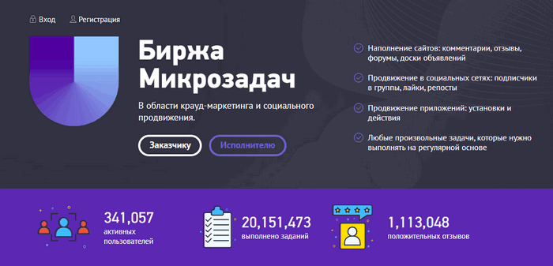
В сервисе можно выбирать пол и страну, откуда будут накручены подписчики. Работает комбинированная система: реальные пользователи + боты. Цена за фолловеров – 2880 рублей с мгновенным стартом в день заказа. Сайт поддерживает накрутку других видов активности: лайки, комментарии, просмотры Сториз. №5 PrSkill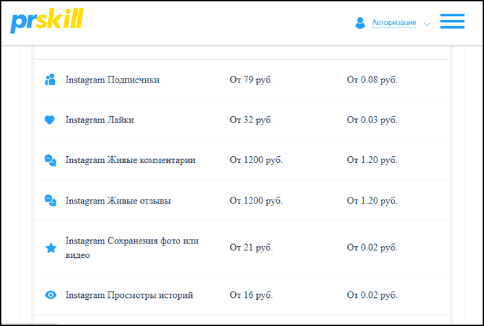
Три разных типа накрутки подписчиков:- привлечение со страницы конкурента;
- живые и активные;
- аудитория из IGTV от конкурентов.
Переходя в форму оформления заказа можно выбирать скорость накрутки, тип гарантии, географически данные и возраст. Например, только Premium, женщины, жительницы СНГ. Цена зависит от выбранных параметров: базовый с низкой скоростью привлечения подписчиков – 7,90 за 100 пользователей, наиболее дорогой – пакет для блогеров за 10130 рублей, за 5000 фолловеров, которые будут добавлены в течение 96 часов. №6 SMMPrime
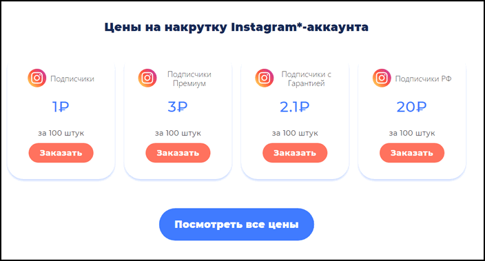
В сервисе есть два пакета по привлечению фолловеров: только русская аудитория и вне зависимости от географии. Цена за обычных подписчиков, без данных по странам – 12 за одного привлеченного, по России – 50 рублей. Кроме добавления аудитории, есть накрутка комментариев, лайков, просмотров постов и Сторис. №7 TmSMM Помимо тарифов, предлагает первую бесплатную накрутку. Но чтобы воспользоваться услугой нужно пройти регистрацию и подтвердить адрес электронной почты. Тарифы: от 19 рублей (боты, без гарантии) до 99 рублей за штуку. Отличаются качеством, скоростью накрутки, географическими показателями. №8 SMMRoot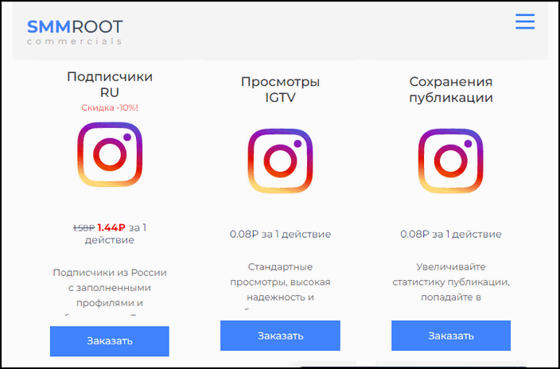
Накрутка русских подписчиков выделена отдельным пакетом и стоит 1,44 за каждого. Сервис дает гарантию, что новая аудитория не отпишется в течение 30 дней и будет проявляться активность. Кроме этого, есть дополнительные тарифы: для жителей Казахстан, Беларуси, Узбекистана и Киргизии. Отдельно выделены те, которые различаются по скорости накрутки, максимальному количеству привлеченных пользователей. №9 LikeMania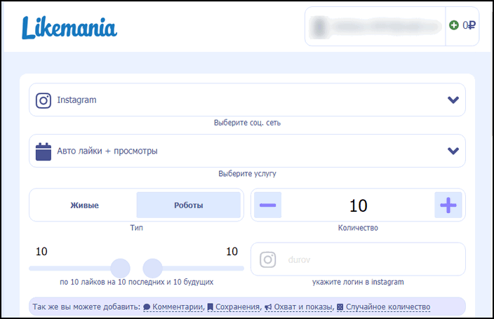
За 100 подписчиков клиенту нужно заплатить 59 рублей, выбирая в параметрах «живые подписчики». Также в сервисе есть привлечение ботов, которые стоят дешевле – 35 рублей за сотню. Чтобы оформить заказ необязательно регистрироваться, но это упростит наблюдение за выполнением задачи. №10 SMOServices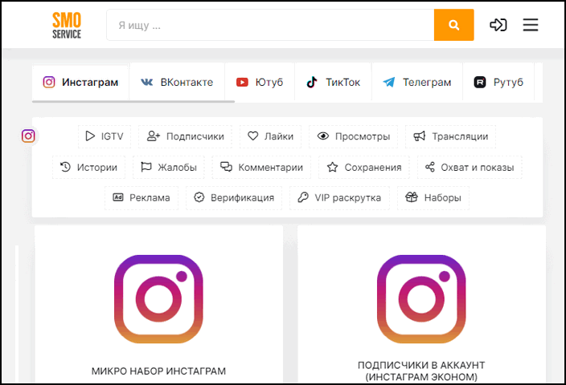
Сервис поддерживает до 8 разных тарифов: от 3,29 рублей до 5,30 за одного подписчика. Разница состоит в том, что более дорогие – жители России, «живые» и активные, не отписываются. По более дешевой ставке предложены боты из разных стран, которые могут отписаться спустя 30 дней. SMOServices поддерживает разные виды активности, включая верификацию и целые наборы для комплексной раскрутки аккаунта. №11 SMMYT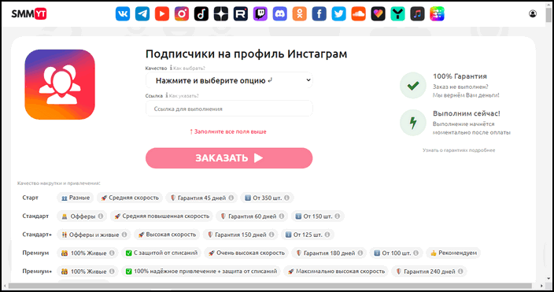
Обширный функционал, где есть переходы по отметкам, репосты и категории подбора исполнителей. В зависимости от настроек (скорость, гарантия, тип аудитории (живые или боты), количество) отличается стоимость. Накрутить подписчиков в Инстаграме* без отписок будет стоить: за 100 – 1350 рублей. №12 EasyLiker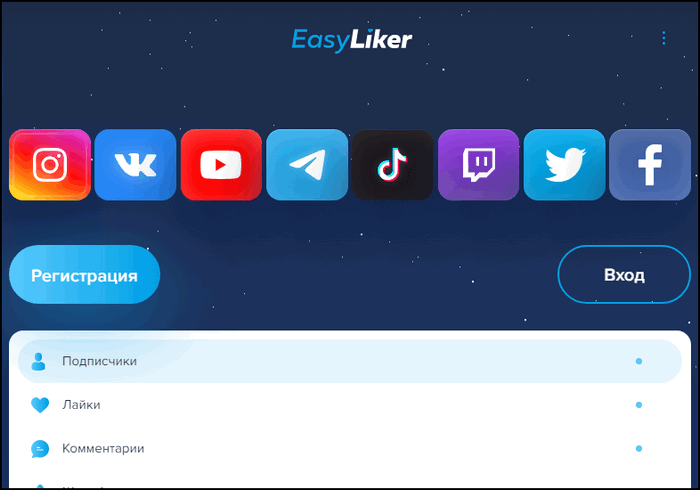
Сервис требует регистрацию, прежде чем воспользоваться услугами. На Инстаграм* предложены 4 скорости накрутки, два типа аудитории. От скорости зависит конечная сумма – до 5 рублей с параметрами «Премиум». Дополнительно клиент может запустить массовую накрутку, указав ссылки с других социальных сетей или публикаций конкурентов. №13 Socelin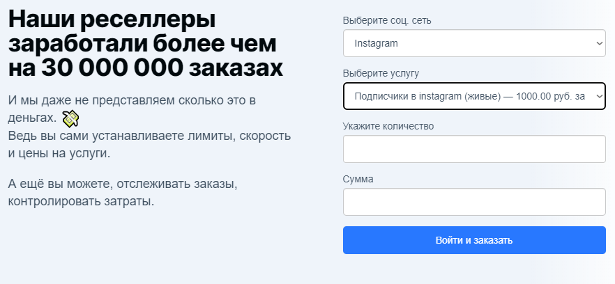
Для оформления заказа необходима регистрация, но тарифы можно посмотреть заранее. Для Инстаграма*, по накрутке живых подписчиков, действует цена в 1 рубль за одного привлеченного. Боты – 0,30 рублей за одного. Минимальный заказ – от 100 фанатов. №14 DoctorSMM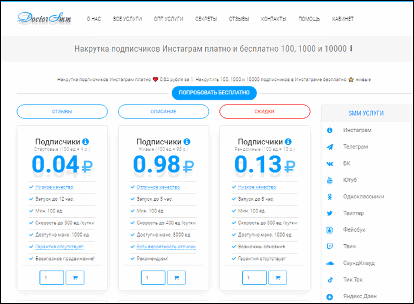
Предлагает накрутку живых подписчиков и ботов. Клиентам предложено 19 пакетов для активной аудитории и 2 для накрутки ботов. Минимальная ставка 0,04 рубля, максимальная – 1,46. Отличаются количеством, скоростью, гарантиями и запуском. Выбирая тариф, нужно обращать внимание на пункт «Отписки». №15 Youtosubs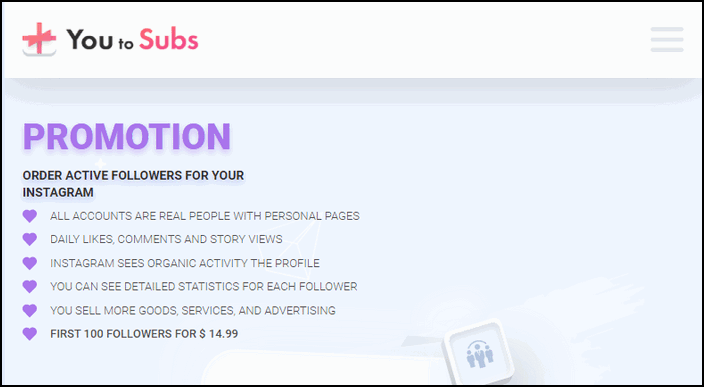
Иностранный сервис, где можно заказать подписчиков после регистрации. На первую сотню предложена плата в 699 рублей со скидкой. Предлагает только «живых» пользователей, активных, с гарантией о минимальных отписках. Клиент может выбирать параметры, как география, пол. №16 SocialHype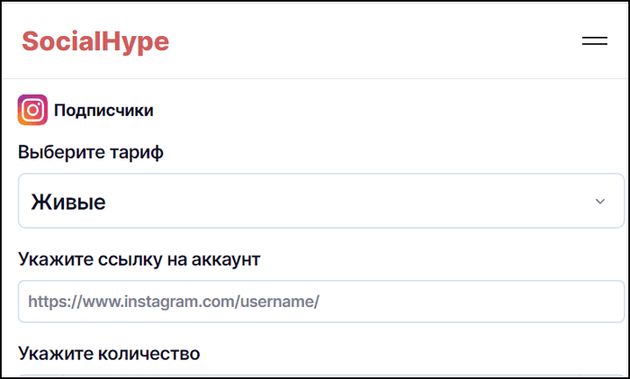
Автоматическая накрутка по заранее заданным параметрам, которые может указывать заказчик. Стандартные – весь мир, скорость до 5000 в день, быстрый старт и гарантия до 30 дней. Кроме этого, в сервисе есть другие услуги по накрутке активностей: комментарии, лайки, просмотры Reels. №17 MartiniSmm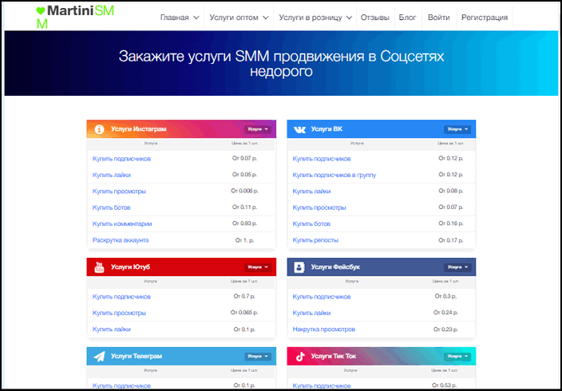
Новая аудитория для Инстаграма* от 0,07 рублей. Отдельная услуга по заказу ботов, тарифы на выбор подписчиков. Есть разделение по географии: Грузия, Беларусь, Казахстан, Армения, Узбекистан, Литва, Россия. Пользователь может выбрать пакет, направленный на накрутку 1000 подписчиков по гео – Россия и СНГ по цене 750 рублей с активными офферами. №18 PRTut Накрутка подписчиков платно в этом сервисе возможна по ставке 57 рублей за 1000 привлеченных. Есть дополнительные пакеты, направленные только на российскую аудиторию, высокую скорость запуска и повышенную гарантию. В PRTut есть тарифы, которые дают 90 дней гарантии того, что аудитория не отпишется. №19 SMMTouch Сервис предлагает от простого пакета в 45 рублей за 100 подписчиков до 100 000 за 39 000 рублей. Скорость получения подписчиков – 3 тысячи в день, учитывая лимиты социальной сети. Для создания заказа необязательно регистрироваться: указать ссылку, количество и перейти к оплате. №20 BestLike Три тарифа на запуск продвижения: «Эконом» от 0,49 рублей за штуку, «Стандарт» - 0,69 р. и «Премиум» за 0,99. У каждого есть ограничения по количеству: «Премиум», где преимущественно «живые» и активные подписчики – 20 000. На «Эконом», который накручивает ботов – 500 000.5 Сервисов накрутки за задания
Накрутка подписчиков в Инстаграм* за задания – это относительно бесплатный способ, с помощью которого можно получить любое количество аудитории. Есть свои особенности, которые стоит соблюдать и знать, прежде чем воспользоваться таким методом. Накрутка подписчиков в Инстаграме* без отписок через задания:
- нужно взаимно подписываться на другие страницы или выполнять условия заданий. Для этого пригодится дополнительный аккаунт, где можно «копить» подписки и не важны Рекомендации;
- большинство сервисов отдают предпочтение «живым» аккаунтам, то есть страницам, где есть фотографии, видео пользователя;
- заказчик может отменить оплату заказа или отправить на доработку;
- задачи проверяются либо в течение 5 минут, либо на протяжении суток.
Сервисы с заданиями делятся на автоматические (проверка не в ручном режиме) и на те, где проверка зависит от создателя заказа. Преимущество такого способа накрутки в том, что заказчик на 100% уверен, что выполнено реальным человеком. Но это не значит, что выполнивший задание, не отпишется или не будет подавать заявку с фейкового аккаунта. №1 Bosslike В сервисе доступна накрутка 100 подписчиков, выполнив такое же количество заданий. После авторизации на сайте нужно перейти в категорию: «Заработать» - подключить страницу Инстаграм*. Выполнять задачи будут настоящие люди, которые пришли на биржу за заработком. Кроме обмена, клиент может пополнить баланс и поставить накрутку вне сбора монет. №2 Forumok.com Биржа также относится к тем, которые были одними из первых по накрутке для соц.сетей. В Форумок действует та же система, что и на Socpublic – проверкой занимаются заказчики. Цена за выполнение задачи начинается от 0,5 рублей до 10. Зависит от дополнительных задач, которые прикрепляют к заказу. Например: «Подписаться и пролайкать последние 10 публикаций». После проверки исполнитель получает уведомление и его баланс будет пополнен на соответствующую сумму. Заработав баллы, их тратят на продвижение своих социальных сетей. №3 Qcomment Один из старейших сервисов, направленных на безопасную накрутку подписчиков в Инстаграме*. Пользователь регистрируется, после чего получает доступ к тысяче заказов. Можно самому накрутить нужный тип активности, заплатив за это накопленными монетами. Проверка заказов зависит от заказчика: они самостоятельно просматривают и подтверждают успешное выполнение. №4 Socpublic Сервис, где можно обмениваться подписками, лайками и комментариями. Если же пользователю не нужна дополнительная активность в свои соц.сети – он может выводить деньги на электронный кошелек или банковкую карту. Как работать с сервисом:
- Пройти регистрацию, указав свой никнейм и добавив адрес электронной почты.
- Подключить страницы из соц.сетей – выбрать из раздела «Задания» подходящие.
- Копить монеты – перейти к созданию своего задания и поставить накрутку подписчикков.
С помощью обмена активностью, исполнитель получает внутреннюю валюту и может развивать свой аккаунт. Кроме этого, счет в сервисе можно пополнять, если нет времени на выполнение заданий. №5 VKSerfing Подключение к сервису возможно через одну из соц.сетей: ВК, Инстаграм*, Телеграм, Тик Ток или Лайк. После выполнения заданий, система автоматически проверит их. Рекламодатель может подать на дополнительную проверку, если задача не была выполнена в полном объеме. Поэтому обе стороны (исполнитель и заказчик) защищены. Минимальная цена заказа на накрутку подписчиков в Инстаграме* – 0,5 рублей. Такой ценник может выставить заказчик за медленное выполнение.
5 Приложений для накрутки Инстаграм*
С телефона, Айфона или Андроида, можно также накручивать подписчиков. У такого способа есть преимущество – получать новую аудиторию можно где угодно, не имея рядом компьютера. Но есть недостаток: большинство приложений из Play Market и AppStore удаляют, так как они противоречат правилам социальной сети Instagram*. Как и с сервисами: страница пользователя должна быть открыта, а двухфакторная аутентификация отключена. Иначе приложение не сможет проверить аккаунт и выполнение заданий.
5 Бесплатных способов накрутить подписчиков в Инстаграм*
Если накрутка подписчиков стоит дорого или автор хочет развивать профиль без привлечения дополнительных инструментов – стоит обратить внимание на бесплатные варианты. К ним относятся:
- Телеграм-каналы с обменом активностей;
- сообщества в ВК, которые направлены на поиск аудитории;
- продвижении в своих других социальных сетях, где больше подписчиков;
- использование хештегов;
- создание креативного контента, с проработанным позиционированием;
- регулярное размещение постов в Reels.
Эти способы можно комбинировать и использовать в аккаунте для стартового продвижения.
- Reels
Первый и актуальный способ, как продвигаться и получить первую аудиторию – размещать посты в Reels. Этот раздел популярен за счет коротких роликов – не более 15 секунд. Пока формат продолжительных клипов не так популярен, поэтому добавлять клипы в IGTV не имеет смысла.
- Хештеги
Несмотря на то, что некоторые эксперты считают теги больше не работают, целевые запросы все ещё актуальны. Например, если страница посвящена продаже мебели, стоит использовать теги: «мебель», «ремонт», «дизайн», «кухня». Ища необходимый контент, пользователи зачастую указывают одиночные запросы.
- Телеграм-каналы для продвижения в Инстаграме*
В мессенджере можно отыскать каналы, посвященные взаимным лайкам и подпискам. Но у такого способа есть и недостаток: огромное количество ненужных подписок и пользователей, которые не проявляют активности. Поэтому участвуя в обмене, нужно указывать, что нужны дополнительные действия.
- Размещение ссылок в своих соц.сетях
К примеру, если у владельца аккаунта есть раскрученная страница в Тик Токе – он может разместить свою ссылку для дополнительного привлечения аудитории. Это может быть, как адрес в описании профиля, так и отдельно созданное видео для получения реакций.
- Поиск аудитории по комментариям и популярным постам
Воспользовавшись таким способом, нужно обращать внимание на лимиты и составлять разные отклики. Если отправлять в комментарии одинаковый текст – система засчитает это, как спам. Система продвижения с этим способом работает на реакцию пользователей: потенциальные подписчики перейдут в профиль к автору отклика.
Накрутка подписчиков с компьютера
С компьютерной версии работают сервисы, программы по накрутке. Преимущество последних в том, что владельцу страницы можно автоматизировать действия и не наблюдать за тем, когда сработают лимиты и накрутка остановится по таймингу.
SocialKit
Чтобы установить ПО, его придется купить на официальном сайте. Есть версия SocialKit.
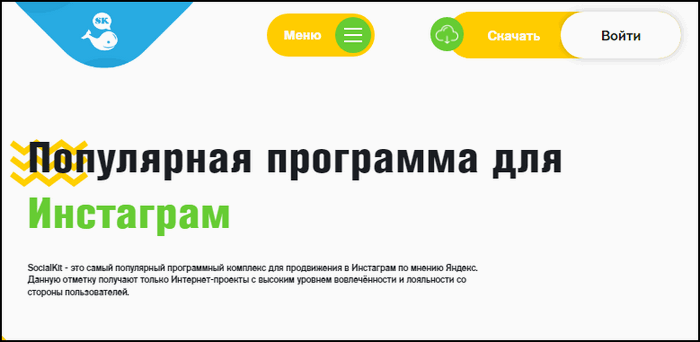
Действия в программе:- подписка на пользователей по списку;
- поиск потенциальной аудитории, которые недавно опубликовали Stories, проявляли активность;
- отписка от ненужных страниц;
- тайминг на лимиты;
- фильтрация подписчиков.
После установки владельцу страницы нужно подключиться к своему профилю и выбрать создание одной из задач. Программа начнет автоматическую подписку на чужие аккаунты, с целью привлечения внимания. Кроме подписки, можно указать «Поставить лайки» и «Просматривать Истории».
ZennoPoster
Программа для автоматизаций действий в Интернете – неплохое решение для Инстаграма*. Пользователь может либо приобрести специального бота для работы с социальной сетью, либо самостоятельно настроить автоматическую подписку. Программа поддерживает свыше 200 шаблонов, куда входит работа с социальными сетями.
Что даст накрутка подписчиков
Увеличить подписчиков можно разными способами: от получения аудитории за счет естественного развития до накрутки с помощью Сервисов, Телеграм-каналов и скриптов.
- SMM-специалистам и маркетологам;
- пользователям, которые хотят стать блогерами;
- небольшим сообществам, чтобы привлечь внимание;
- владельцам-бизнеса для поддержки постоянно притока активности;
- для участия в конкурсах и увеличение аудитории на мероприятиях.
- постоянная активность на странице или в сообществе;
- повышение охватов для демонстрации рекламодателям;
- приток новых пользователей и увеличение счетчика фанатов;
- поиск своей аудитории;
- возможность стать популярным.
Прежде чем начинать накрутку, автору стоит наполнить страницу новым контентом. Если это ранее был личный профиль – стоит настроить продвижение под него. Чаще публикуйте новые материалы, Сторис, Посты, Reels и т.д. Не забывайте накручивать лайки вместе с подписчиками, чтобы раскрутка была естественной и во всех направлениях.
Какие могут быть риски и как их минимизировать - соблюдайте лимиты
Накрутка подписчиков в Инстаграм* бесплатно и быстро – это не только эффективное продвижение, но и перечень рисков, с которыми может столкнуться автор. В социальной сети есть лимиты, ограничивающие количество действий в день. Так, владельцам страниц, которые были созданы менее недели назад, не рекомендуется подписывать более чем на 10 человек в сутки. Чем еще опасна автоматизированная накрутка:
- отсутствие целевой и заинтересованной аудитории. Проблема в том, что большинство сервисов не заточены под работу с реальным пользователями, которые готовы покупать или участвовать в развитии чьего-то блога;
- лимиты. Если владелец страницы единожды допустит ошибку и страница попадет в «теневой бан», контент в дальнейшем будет меньше рекомендован;
- если использована накрутка только на один вид активности – аккаунт будет выглядеть пустым.
Поэтому, используя накрутку в Инстаграм* с компьютера или телефона, нужно подключать сразу несколько вариантов активности. И рассчитывать так, чтобы те работали с перерывами. Например, в один день запустить только накрутку подписчиков, а в другой – лайки и комментарии. При составлении плана повышения активности, нужно учитывать естественное привлечение. Оно также влияет на существующие лимиты и порой, страницу в Инстаграме* блокируют из-за превышения числа хештегов, чем за автоматические действия.
Накручивайте и другие активности
Лайки, комментарии, реакции на Сторис – те виды активности, которые продвигают контент в Рекомендации. Особенности отметки «Мне нравится»:
- записи будут рекомендованы друзьям пользователей, которые поставили лайк;
- кроме лайков Инстаграм* проверяет другую активность и в соответствии с этим продвигает запись;
- отметки «Мне нравится» могут быть скрыты, но всегда доступны в статистике.
Комментарии – это тот тип действий, который наиболее эффективен в продвижении. Социальная сеть «считает», что пользователи, оставившие отклик – внимательно прочли текст, до конца посмотрели видео или пролистали все фото ил «карусели». Один из менее заметных видов – репосты. Зато упоминание другой страницы в Сторис на открытый аккаунтах – повышение охватов и выдача в рекомендованных записях.